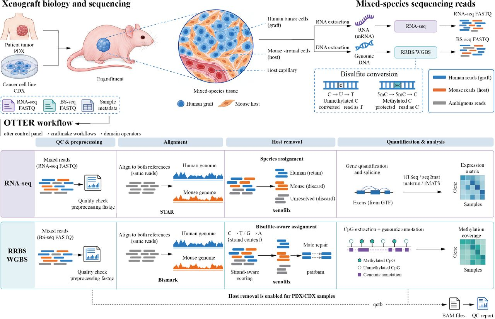

OTTER：异种移植多组学工作流的预印本摘要
我们的预印本 OTTER: Orchestrated Transcriptomic, Tumor-xenograft (PDX/CDX), and Epigenomic Reporting Workflow 已于 2026 年 10 月 27 日在 bioRxiv 公开。这里存一份摘要，中英各一，便于日后引用与检索。
- 作者：Yanhua Zheng、Xin Liu、Yingyu Yi、Xiaojun Sun、Fang Liu、Xiaojing Yan、Cheuk-Him Man、Hongcang Gu、Xiaoxue Wang、Fan Zhang
- 通讯作者：Xiaoxue Wang、Fan Zhang（中国科学院合肥物质科学研究院健康与医学技术研究所，合肥肿瘤医院）
- 发布日期：2026-10-27（v1，New Results，bioinformatics）
- 许可：CC BY 4.0
- 代码：otterlab-bio/otter（MIT）
- 测试与验证数据：fallingstar10/otter-data
摘要（原文）
Summary. Tumor xenograft sequencing libraries inevitably contain infiltrating murine host reads, but conventional deconvolution tools fail on bisulfite sequencing (BS-seq) because chemical C-to-T deamination collapses sequence entropy and destroys graft recall (< 0.015%). We present OTTER, an automated, compiled multi-omics workflow framework that decouples execution into static domain operators, an immutable reference registry, and a native strand-aware edit-distance engine, restoring bisulfite deconvolution (52%–54% recall across a 0%–99% compositional gradient) while preserving complete decision parity on transcriptomics.
Availability and implementation. OTTER is implemented in Go and Rust, runs on x86_64 Linux (including CentOS 7 with glibc 2.17), and is freely available open-source under the MIT License at github.com/otterlab-bio/otter test and validation data are provided at huggingface.co/datasets/fallingstar10/otter-data.
摘要（中译）
摘要. 肿瘤异种移植的测序文库不可避免地混入小鼠宿主 reads，而常规的去卷积工具在亚硫酸氢盐测序（BS-seq）上失效：化学性的 C 到 T 脱氨基压缩了序列熵，使移植物 reads 的召回率降到 0.015% 以下。我们提出 OTTER，一个自动化、编译式的多组学工作流框架，把执行过程拆解为静态领域算子、不可变的参考基因组注册表与原生链感知编辑距离引擎，从而恢复亚硫酸氢盐数据的去卷积能力（在 0%–99% 的组分梯度上召回率 52%–54%），同时在转录组数据上保持完整的判定一致性。
为什么要重写
异种移植（PDX/CDX，合称 XDX）是把人的肿瘤组织或细胞系种到免疫缺陷小鼠体内，能保住细胞异质性与药物反应性，代价是测序文库成了人鼠嵌合体——按瘤种、传代次数与血管化程度不同，小鼠来源的 reads 常占 10% 到 70% 以上。不去掉它们，就会得到假阳性突变、失真的表达计数和走样的甲基化谱。
已有的 Xenome、Disambiguate、XenofilteR、Xengsort 各自解决了 RNA 层面的问题，但都绕不开两件事：
- 对 BS-seq 根本不适用。亚硫酸氢盐把未甲基化的胞嘧啶变成尿嘧啶（扩增后读作胸腺嘧啶），四字母的基因组字母表收缩成不对称的三字母码，常规比对器与编辑距离判别器会把真实的转换当成错配。
- 都是碎片化的单点工具 —— 以脚本形式运行，缺少质控、调度与断点恢复。
OTTER 的起点是早期的 xdxtools（R + Snakemake）原型。它在生产集群上暴露出三个系统性瓶颈：Conda 依赖图频繁触发 SAT 求解僵局、CentOS 7 / glibc 2.17 上的动态链接符号错误、以及 Snakemake 在 Lustre/NFS 上的锁竞争与误判中止。于是整个架构推倒重来。

架构上的三个决定
- 算子编译化。 七个静态领域算子取代原型里的 R 脚本：fastqcx（质控）、xenofilx（宿主/移植物分类）、methx（Bismark 下游）、pairbam（配对修复）、seq2mat（表达矩阵）、matsrun（可变剪接）、qctb（QC 汇总）。Go 与 Rust 编译成静态二进制，不再依赖运行时 R，也不受 glibc 符号漂移影响。
- 环境最小化。 轻量的 Rust 环境管理器 enva 只解决 Bismark、Bowtie2、STAR 这类上游重型比对器的科学环境，其余全部由静态二进制承担。
- 参考基因组与运行快照不可变。 参考资产按加密摘要封存在注册表（
OTTER_REFERENCE_ROOT）里，一次运行把输入、配置与工具链清单绑定成otter.run/v1快照，成为运行时的唯一权威。
关键数字
| 指标 | 结果 |
|---|---|
| BS-seq 去卷积召回率 | 51.61%–54.03%（0%–99% 组分梯度，43 个评估格） |
| 宿主特异性 | 约 99.92% |
| 未打补丁的基线 | 低于 0.015% |
| 相对 xdxtools 原型的增益 | +0.63% 到 +0.70%；60% 人源混合时每百万 reads 多救回约 4000 条真实人源片段 |
| 转录组判定一致性 | 100%（32.1M 片段 RNA-PDX，以及 0%–99% RNA 梯度） |
| methx vs methrix | 2.41 倍加速（1 m 32 s vs 3 m 41 s），峰值内存 18.62 GiB → 6.42 GiB |
| craftmake vs Snakemake 调度延迟 | 2.7–4.2 s vs 9.5–19.8 s |
那层 52%–54% 的“天花板”并非算法失灵，而是被主比对阶段的 C 到 T 熵收缩（）锁死的；在已比对的人源片段上，xenofilx 的去卷积保留率是 99.23%，1–10× 深度下基因组覆盖保真度超过 99.0%。四因素三水平参数审计（36 次运行）把错配阈值 定为推荐操作界：召回 52.22%、F1 68.59%、特异性 99.92%。
验证环境
两套生产集群：杭州的机构超算（CentOS 7 / glibc 2.17，正是最难伺候的那一类）与 Paracloud 超算（Slurm + Lustre）。数据集覆盖 RRBS、RNA-seq、RNA-PDX 与 BS-PDX，包括一个 32.1M 片段的 RNA-PDX 与一个 45.2M 片段的 BS-PDX 公共 SRA 队列。
引用
Zheng Y, Liu X, Yi Y, Sun X, Liu F, Yan X, Man C-H, Gu H, Wang X, Zhang F. OTTER: Orchestrated Transcriptomic, Tumor-xenograft (PDX/CDX), and Epigenomic Reporting Workflow. bioRxiv 2026. DOI: 10.64898/2026.10.24.761506
预印本未经同行评议。文中数字均为 v1 版本结果，若后续有修订，以 bioRxiv 上的最新版本为准。